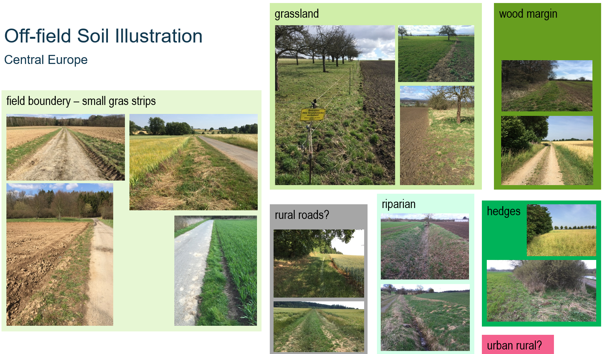

Create Scenarios (under preparation)
In the context of risk assessment for pesticides, a Scenario refers to a set of conditions and assumptions used to model and predict the environmental fate and effects of pesticides (Glossary/Scenarios). A Scenario is typically composed of
- environmental conditions (abiotic, biotic, land cover, etc.)
- agricultural practise, esp. land use and land management, including the use of PPPs, as refered to as PPP use scenario
In xCP, the term PPP use scenario is simultaneously addressed as Parameterisation of xCP (as part of a full parameterisation of a landscape model). The environmental conditions together with the land use are often called a landscape scenario.
In an xCP parameterisation, PPP use are typically defined related to land use types (eg, the use of a fungicide in apples). During runtime xCP evaluates actual land use, ie. land use data can be static or dynamic.
Note: This section provides an introduction to xCP scenarios on a technical level with the intention to enable colleagues with technical experiance to build scenarios and to use xCP. However, we plan to develop a graphical user interface (GUI) that allows any user to intuitively build xCP scenarios.
LULC, off-field soil definition
we propose to understand xSR scenarios as a composition of off-field soil habitats, typically combining ready-to-use LULC data with knowledge

Illustration of potential off-field soil areas in cultural landscapes in central Europe.
Use Example Scenarios as Templates
The xCropProtectionDemo model is packaged with example scenarios located in the scenario folder. Example scenarios are of static land use types.
-
A scenario in Rummen, Belgium (Rummen-full)
-
A subset of the Rummen-full scenario in Rummen, Belgium (Rummen-xCP-TestingScenario)
Custom Scenarios
To create a new scenario for use with xCropProtection, users should follow these steps.
- In folder scenario\, create a new folder with the scenario name. In this example, the scenario will be called "test-scenario".
-
In folder scenario\test-scenario\, create a folder named "geo". Copy a scenario.xproject file from a different scenario or create a new file and copy the following xml text:
Add correct values for all elements in scenario.xproject.<?xml version="1.0" encoding="utf-8"?> <Project xmlns="urn:xLandscapeModelScenarioInfo" xmlns:xsi="http://www.w3.org/2001/XMLSchema-instance" xsi:schemaLocation="urn:xLandscapeModelScenarioInfo ../../model/core/base/scenario.xsd"> <Name>SCENARIO NAME</Name> <Version>1.0</Version> <SupportedRuntimeVersions> <Version variant="xCropProtectionDemo" number="0.1"/> </SupportedRuntimeVersions> <Description>DESCRIPTION</Description> <TemporalExtent> <FromDate>2000-01-01</FromDate> <ToDate>2019-12-31</ToDate> </TemporalExtent> <Changelog> <Version number="1.0" date="2000-01-01"> <Change author="your initials">Scenario created.</Change> </Version> </Changelog> <Content> <Item name="LandscapeScenario" target="geo/package.xinfo" version="1" /> </Content> <Contacts> <Contact>Thorsten Schad - thorsten.schad@bayer.com</Contact> </Contacts> </Project>
Preferably, use an XML capable editor (eg, VSCode, PyCharm xxx) and build the scenario.xproject using such a template or from scratch.
Note: It is important to link the XML to its schema:
-
In the geo folder:
- Place the shapefiles of the spatial data to be used in the scenario.
- Create package.xinfo. Copy from another scenario or use the following text:
<?xml version="1.0" encoding="utf-8"?> <landscape_package xmlns="urn:xCropProtectionLandscapeScenarioGeoPackage" xmlns:xsi="http://www.w3.org/2001/XMLSchema-instance" xsi:schemaLocation="urn:xCropProtectionLandscapeScenarioGeoPackage ../../../model/variant/package.xsd" > <meta> <version>1.0</version> <target_type>222</target_type> <habitat_types>0</habitat_types> </meta> <base> <base_landscape_geometries>LULC.shp</base_landscape_geometries> <feature_id_attribute>ALVID</feature_id_attribute> <feature_type_attribute>LULCTypeId</feature_type_attribute> <additional_attributes/> </base> <supplementary> </supplementary> <supplementary_shapefiles/> </landscape_package>base_landscape_geometriesdefines the name of the shapefile contained in the geo folder.feature_id_attributedefines the column of the shape file which is used to distinguish individual fields/features. It is not recommended to use OBJECTID for this xxx.feature_type_attributedefines the column of the shape file to specifies a field/feature's LULC type. The TargetCrops value in PPMCalendar.xml refers to the field defined infeature_type_attribute.
- In CropProtection\, create a file named xCropProtection-test-scenario.xml. It can be left blank for the moment.
- In CropProtection\PPMCalendars\, create a folder with the same name as the new scenario. In that folder, place all PPMCalendar.xml files that should be included with the new scenario. Note that not every file in this folder will be used during a run of xCropProtection, files must first be added to xCropProtection-test-scenario.xml. Examples of PPMCalendar.xml files can be found in Templates.
- Modify CropProtection\xCropProtection-test-scenario.xml to include PPMCalendars. Sample:
Technologies.xml will exist after cloning xCropProtection. However, if a PPMCalendar contains a Technology not already included in Technologies.xml, it must be added to the file in a manner consistent with the elements already present.
<xCropProtection xmlns="urn:xCropProtectionLandscapeScenarioParametrization" xmlns:xsi="http://www.w3.org/2001/XMLSchema-instance" xsi:schemaLocation="urn:xCropProtectionLandscapeScenarioParametrization ../model/core/components/xCropProtection/xCropProtection.xsd"> <PPMCalendars> <PPMCalendar include="PPMCalendars/test-scenario/PPMCalendar-1.xml"/> <PPMCalendar include="PPMCalendars/test-scenario/PPMCalendar-2.xml"/> </PPMCalendars> <Technologies include="Technologies.xml"/> </xCropProtection> -
Make a copy of template.xrun (the .xrun file represents the actual landscape model parameterisation); rename the copy with a unique name. Change elements in the file so that xCropProtection uses the new scenario files. Be sure to change:
- LandscapeScenario: scenario/test-scenario
- CropProtectionScenario: test-scenario
- SimID: a string that does not already exist in the run folder
- SimulationStart and SimulationEnd: set the first and last date to be simulated
After these steps are completed, the new scenario files should have the following structure:
├── CropProtection
│ ├── PPMCalendars
│ │ ├── test-scenario
│ │ │ ├── PPMCalendar-2.xml
│ │ │ ├── PPMCalendar-1.xml
│ ├── Technologies.xml
│ └── xCropProtection-test-scenario.xml
├── scenario
│ ├── test-scenario
│ │ ├── geo
│ │ │ ├── (multiple shp files)
│ │ │ └── package.xinfo
│ │ └── scenario.xproject
└── template-test-scenario.xrun
Drag template-test-scenario.xrun onto __start__.bat to run xCropProtection using the new scenario.
Tiered Approach
xxx Depending on the purpose of the xSR modelling,
- off-the-shelf data: covering large geographic regions
- best-available data, including manual processing
- contemporary data generation: high-resolution drone mapping
- field study: best possible landscape mapping, xxx quantification and modelling